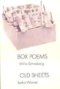

|
|
Storytelling in Cambodia
Poems by Willa Schneberg
Introduction by U. Sam Oeur and Ken McCullough
September 2006
Click here for ordering information.
CALYX BOOKS
Poetry/Asian Studies/Jewish Studies
ISBN 0-934971-90-0 $13.95 paper, 6� x 9�, 124 pages
CALYX BOOKS, PO Box B, Corvallis, OR 97339
Call 541-753-9384 FAX 541-753-0515
email: calyx
at proaxis.com
|
|
|
In the Margins of the World, Plain View Press
Awarded the 2002 Oregon Book Award for Poetry.
In this volume, Willa Schneberg
traverses our worldly margins, from the Middle East to the American
heartland, from the Jewish community in Brooklyn, �to Israel, the Far
East, Egypt and the West Bank.
In these finely wrought, surprising poems, Willa Schneberg seeks
connections: between man and woman, woman and woman, Jew and Arab,
father and daughter. Beyond these she inquires about the connections
that fail, and more significantly, the ones that survive, between the
past and today, between culture and history, between the family and its
inevitable loss. A far-reaching and moving book. ����- �Ehud Havazelet
In an unwavering search for the meaning of contemporary womanhood,
Willa Schneberg compresses 5000 years of Jewish history into vivid
intricate portraits. Whether writing about middle eastern women
restricted by their cultural milieu or relating minute details about
her family, these poems act as gentle wake-up calls. ������ - Rochelle Ratner
Purchase In the Margins of the World directly from the author. Please send a check for $14, including postage and
handling, to: Willa Schneberg, 1306 NW Hoyt Street, Suite 208, Portland, Oregon, 97209.
|
|

|
BOX POEMS, Alice James Books
She will speak for us, hear us, know our secret trouble, our intimate
imagery and behavior. She has the life-strength, curiosity,
perception, language. To read her is to learn that we survive by caring
for strangers. Willa Schneberg is a poet with healing power. I read her
with gratitude. ��� - Milton Kessler
Purchase Box Poems from Alice James Books at www.alicejamesbooks.org.
|
|